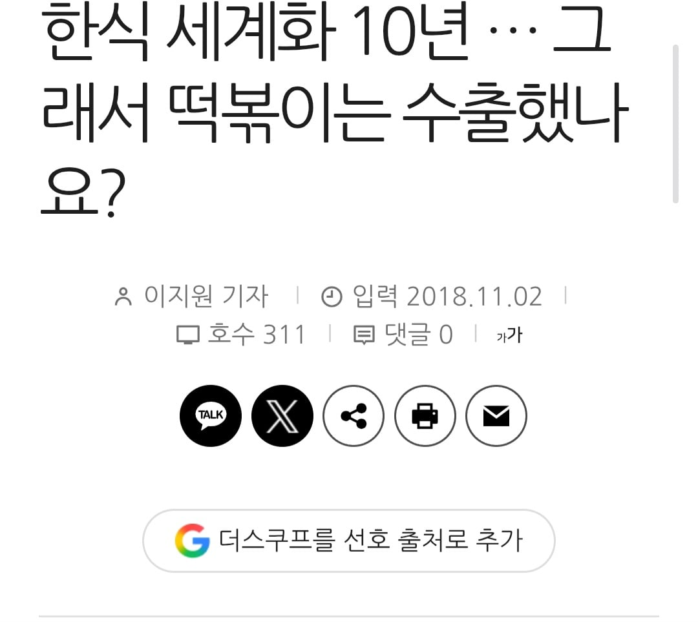
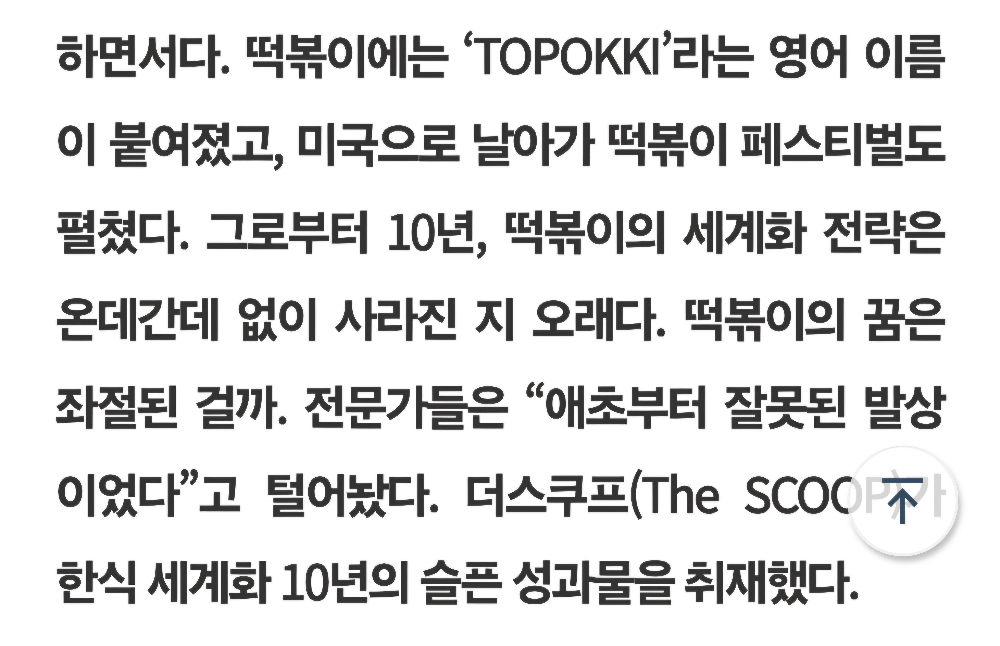
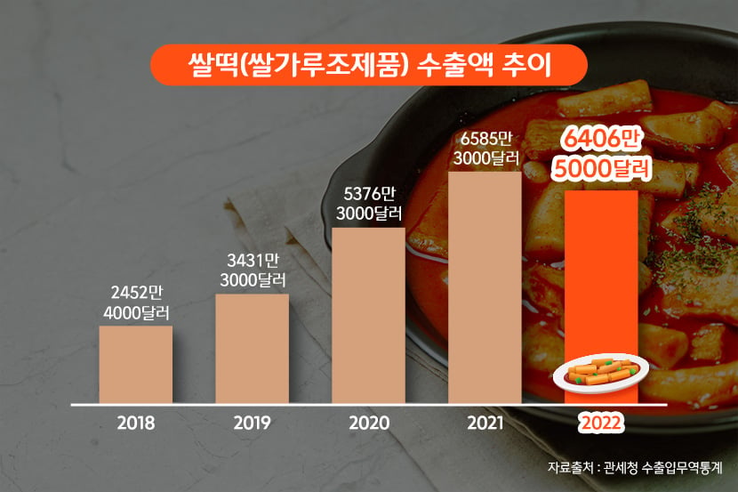

그러나
딸깍

정부 따위가 뭘 할 수 있죠?


그러나
딸깍

정부 따위가 뭘 할 수 있죠?
저때 한국쌀은 찰기가 넘쳐서 먹으면 더부룩 해서 일본 한국말고는 저런밥 안먹는다고 까였지 ㅋㅋㅋ
이 개소리 들어본 기억나네ㅋㅋ
우리나라서 먹는 자포니카 품종의 쌀은 한국, 일본 밖에 안 먹음. 심지어 미국에서는 스시용 쌀이라고도 불림.
물론 제국주의 시절에 인도 쌀이 더 먼저 퍼져나가서이기도 한데 애초에 수요층이 한국, 일본이라 너무 적음.
찹쌀은 sticky rice라고 불리면서 애초에 다른 부류 취급.
근데 안남미를 주식으로 하는 인도, 베트남, 필리핀 쪽에다가 자포니카 쌀밥을 주면 소화를 못 시키기는 함ㅠㅠㅠㅠ
소화를 왜 못시켜
경작을 못시키는거지
김치 츄라이츄라이= 으 마늘냄새 미개한새끼들
떡볶이 츄라이츄라이=으 질감 씨발 미개한새끼들
이게 디폴트였는데 싸이 BTS 오징어게임 백투백투백 홈런으로 ㅋㅋㅋㅋ
케데헌으로 김밥 라면도
일본문화 뜨기전엔 날생선 먹는다고 미개인 취급했지 ㅋㅋ
초밥을 세계화 한 사람이 놀랍게도 통일교 문선명이더라 ㄷㄷ
일본 포로수용소에서 포로들한테 김을 제공했더니 검은종이를 억지로 먹여서 포로들을 고문한다는 날조도 있었지
정부 '따위'가 한식이 알려지는데 한 일들
-전통발효식품(고추장·된장 등) 식품 규격화 : 해외 기준으로 통관에 걸리는 일 없게 코덱스(국제식품규격위원회)에 고추장, 김치등 등록
-표준화된 영문 표기 및 레시피 정립 : 라이스케익같은 똥같은 표현 다 없애고, '떡볶이(Tteokbokki)', '비빔밥(Bibimbap)' 등 혼선이 있던 한식 영문 명칭을 정립
-수출 물류비 및 마케팅 지원 : 중소기업들이 해외마켓에 물건 수출할때 정부예산으로 신선도 유지 기술 지원, 해외 냉동/냉장 공동물류센터 이용 지원, 현지 마케팅 및 브랜드 육성 지원
일반 국민이 눈에 보이게 뭐 했는지는 안보여도 예산 뜯어보면 국가차원에서 하는게 없지는 않다
??? : 정부관료들은 김치워리어 따위 탁상행정에 예산을 썼다구요!!!
놀랍게도 김치워리어도 비하인드가 밝혀지고 재평가됨.
https://namu.wiki/w/%EA%B9%80%EC%B9%98%20%EC%A0%84%EC%82%AC#toc
그걸 다른 나라가 안하냐하면 그것도 아님
뭐? 붐업??
한국여자들이
떡볶이가 소울 음식인데
다른나라 여자들도 맛보고 익숙해지면 당연히 잘통하겠지
국가가 도와준 부분은 전혀 없지 오히려 걸리적거리지 않으면 다행인거고
비빔밥 떡볶이 열심히 밀었는데 하나도 안통했지
문화가 통하니까 알아서 찾는다 이거 배운게 큰듯
이게 참 문화라는게
대니얼대킴 그사람도 말한건데 소위말해 한국관련된게 쿨해보이는거 이게 진짜 큰거임
k컨텐츠들 매출만 놓고 메이플에 발끝도 못따라간다고 개드립 겜돌이새끼들이 빼액질할때 진짜 답답함
케이팝데몬헌터스때문에 넷플가입자가 얼마가늘었고 매출로치면 얼마다 이런 단순한계산으로끝나는게 아닌데 문화라는게
걍 음식은 맛보단 익숨함이야
문화적으로 친근하고 가까운나라의 음식이면 처음먹어보는 맛도 다채롭고 색다른맛으로 인지하지만
생판들어본적없는 나라의 음식을 먹었는데 안익숙한맛이다?
바로 맛대가리없는 음식으로 느껴지는법임
ㄹㅇ 방해만 안되면 다행이지 ㅋㅋ
맛이 아니라 정보를 먹고있는거라구..!!
그들은 떡볶이를 먹고 있는게 아냐
정부 -> 불륜상대를 일컫는 말입니다

지자체들에서 자기 지방 향토 음식 알리려고 홍보물이나 책자들 아무리 나눠줘도, 유명해지기가 쉽지 않잖아
자국에서 홍보하는 것도 어려운데, 한국이라는 나라 자체를 모르는 사람들한테 우리나라 식문화를 알리는 게 얼마나 어렵겠어
쿨재팬이 어떻게 됐는지 보면 ㅋㅋ 한류를 진짜 국책사업으로 밀었으면 오히려 꼴아박았을 수도 있음
애초애 무바라무바라 해서 될거였으면 세계많은음식들이 다 세계화됐겠지
떡볶이 세계화 하면서 블루베리 떡볶이 같은 거 만든 게 생각나네
애초에 국책으로 뭘하면 미쳐버린 결과만내고 슈킹하는 거지
이자식지금붐업이라고
비비고 아니였음?
그들은 정보를 먹고 있다